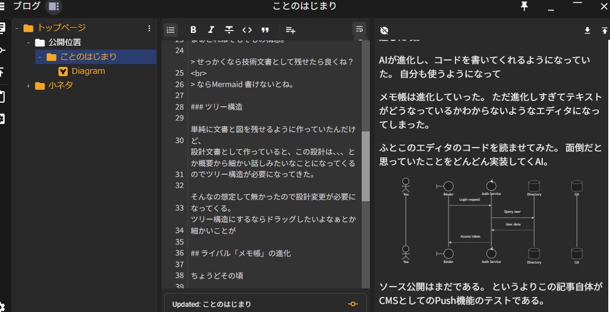
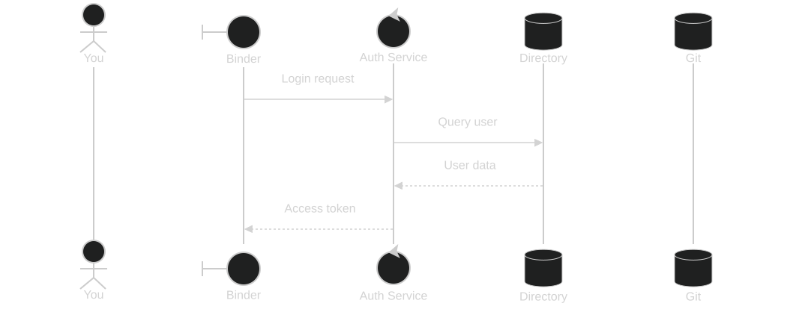
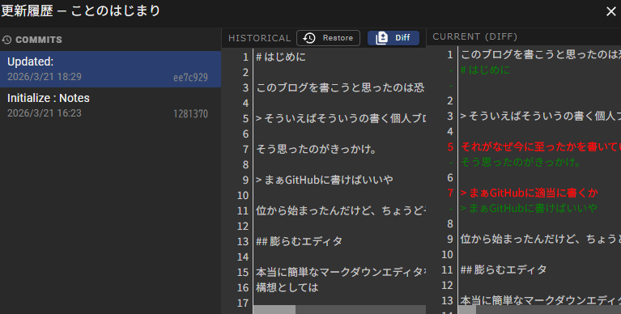

ことのはじまり
このブログを書こうと思ったのは恐らく３年近く前。パソコンを久しぶりに自作するに辺りどういう構成にしたかを書こうと思った。
そういえばそういうの書く個人ブログないなぁ
それがなぜ今に至ったかを書いていきたい。
まぁGitHubに適当に書くか
位から始まったんだけど、書こうと思うと案外書きづらい。 ちょうどその頃マークダウンの簡易エディタが欲しくてそれを作ってやろうという簡単な気持ちから始まった。
膨らむエディタ
本当に簡単なマークダウンエディタを作る予定だった。
編集の履歴が見れたらなぁ
という考えの元、Gitで履歴を残そうと思って、文章をgo-git で保存しようと思い立つ。これがベースの考え方。
このエディタは常にテキストを更新し、自分の作業が終わったら保存（Gitでいうコミット）。別に作業途中でアプリを終了しようがファイル自体は保存されているっていうのが特徴。
ここで少し欲が出てくる。 設計文書として保存できたらいいな。
ならMermaid 書けるよね？
単純に文書と図を残せるように作っていたんだけど、 設計文書として作っていると、この設計は、、、とか概要から細かい話しみたいなことになってくるのでツリー構造が必要になってきた。
そんなの想定して無かったので設計変更が必要になってくる。 ツリー構造にするならドラッグしたいよなぁとか細かいことができればいいなぁとか画像を挿入してーとか、当初の目標である簡易CMSとしての機能が加わりどんどん肥大化していって頭が痛くなってきた。
ライバルの進化と衰退
VSCode で同じようなことはできるんだけど、まぁライバル視してあまりライバル視してなかった。単純にメモを書いておくには大きすぎるかな？って印象だったからだ。
しかしちょうどその頃、Microsoftの肝いりで”メモ帳”が進化を始める。 タブで開けるようになり、端末が再起動してもメモ自体は残っている。
ようは一番やりたかった保存せずに文章は残っているという一番の特徴が被ってしまった。
自分の気持ちも少し萎えたのとデータ自体の保存は完了していたので別にいいやって感じになって自分用のツールとして使っていた。
そして、再燃するきっかけになったのはメモ帳の無駄な進化。マークダウンへの対応である。
それをみた瞬間
メモ帳は終わった
と感じた。はじまっていたのかは不明だけど、少し開発意欲が湧いてくる。
AIの進化
恐らく全くバージョンアップをしなくなって１年は経過した頃。 AIが進化し、コードを書いてくれるようになっていた。自分も使うようになっていった。
ふとこのエディタのコードを読ませてみた。 面倒だと思っていたことをどんどん実装してくAI。
おかしなコードを書くこともあるが、ノウハウを蓄積する為にもどういうことが得意か？とかそんなことを調査しながら色々やってみたかった機能などを実装していく。
それで一応外に見せれるようになったのがこの「Binder」

これはこのブログを書いている途中だが、ある程度書けるようになったし、このブログが見れているってことはCMSとしても機能しているということ。
もちろん図も書ける。

というよりこの記事自体がエディタのPush機能のテストである。 面白いことに簡易的なGitクライアントみたいな機能がちょこちょこある。

まだ色々な機能を追加していくとは思うが、まぁ一旦はそれなりのエディタになった。何より編集自体は外部エディタを起動して編集もできるのでVimも使おうと思えば使える。
Wikiなどで使い方が出来上がったら何か宣伝もするかもだけど、まぁ基本的には自分の便利なメモ帳である。